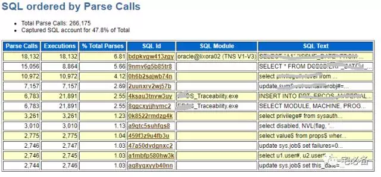

SQL Statistics
原创 2017-08-30 Oracle 宅必备
通过前面awr报告的说明，我们知道了如何查看数据库的负载，SGA各种指标以及如何找出并处理各种等待事件
这节讲如何在awr报告中找出系统中的TOP SQL语句
SQL Statistics
awr报告提供了从如下 8个指标来排序出相关的TOP SQL
SQL ordered by Elapsed Time
这部分是按SQL 语句持续时间进行排序的
Executions =0表示在awr报告时间内未执行完
SQL ordered by CPU Time

这部分是按SQL语句消耗的CPU时间来排序的
Executions =0表示在awr报告时间内未执行完
SQL ordered by Gets
该部分是按SQL语句的逻辑读来排序的
这里需要注意的是执行次数非常多的语句，可能会导致操作系统CPU使用率飙升
Executions =0表示在awr报告时间内未执行完
SQL ordered by Reads

这部分是按SQL语句的物理读来排序的
Executions =0表示在awr报告时间内未执行完
SQL ordered by Executions
这部分是按SQL语句的执行次数来进行排序的
这里需要注意的是执行次数非常多的语句，可能会导致操作系统CPU使用率飙升
Executions =0表示在awr报告时间内未执行完
SQL ordered by Parse Calls

这部分是按SQL语句的解析次数进行排序的
Parse Calls/Executions >1 说明每次执行需要多次解析
Parse Calls/Executions <1说明一次解析可供多次执行使用
越接近1说明解析没有被复用
Executions =0表示在awr报告时间内未执行完
SQL ordered by Sharable Memory
该部分按SQL语句使用的共享内存排序
Executions =0表示在awr报告时间内未执行完
SQL ordered by Version Count
该部分按照SQL 语句的version count数量进行排序
version count 多说明相同语句在内存中shared pool没有被复用，需要查看具体原因
Executions =0表示在awr报告时间内未执行完
Complete List of SQL Text
这里列出了上面提到的所有SQL 语句的全部语句